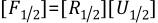
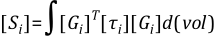

When the strains in a material exceed more than a few percent, the changing geometry due to this deformation can no longer be neglected. Analyses which include this effect are called large strain, or finite strain, analyses. A large strain analysis is performed in a static (ANTYPE,STATIC) or transient (ANTYPE,TRANS) analysis while flagging large deformations (NLGEOM,ON) when the appropriate element type(s) is used.
The remainder of this section addresses the large strain formulation for elastic-plastic elements. These elements use a hypoelastic formulation so that they are restricted to small elastic strains (but allow for arbitrarily large plastic strains). Hyperelasticity addresses the large strain formulation for hyperelastic elements, which allow arbitrarily large elastic strains.
The theory of large strain computations can be addressed by defining a few basic physical quantities (motion and deformation) and the corresponding mathematical relationship. The applied loads acting on a body make it move from one position to another. This motion can be defined by studying a position vector in the “deformed” and “undeformed” configuration. Say the position vectors in the “deformed” and “undeformed” state are represented by {x} and {X} respectively, then the motion (displacement) vector {u} is computed by (see Figure 3.1: Position Vectors and Motion of a Deforming Body):
(3–1) |
The deformation gradient is defined as:
(3–2) |
which can be written in terms of the displacement of the point via Equation 3–1 as:
(3–3) |
where:
| [I] = identity matrix |
The information contained in the deformation gradient [F] includes the volume change, the rotation and the shape change of the deforming body. The volume change at a point is
(3–4) |
where:
| Vo = original volume |
| V = current volume |
det [
 ] = determinant of the matrix ] = determinant of the matrix |
The deformation gradient can be separated into a rotation and a shape change using the right polar decomposition theorem:
(3–5) |
where:
| [R] = rotation matrix ([R]T[R] = [I]) |
| [U] = right stretch (shape change) matrix |
Once the stretch matrix is known, a logarithmic or Hencky strain measure is defined as:
(3–6) |
([ε] is in tensor (matrix) form here, as opposed to the usual vector form {ε}). Since [U] is a 2nd order tensor (matrix), Equation 3–6 is determined through the spectral decomposition of [U]:
(3–7) |
where:
| λi = eigenvalues of [U] (principal stretches) |
| {ei} = eigenvectors of [U] (principal directions) |
The polar decomposition theorem (Equation 3–5) extracts a rotation [R] that represents the average rotation of the material at a point. Material lines initially orthogonal will not, in general, be orthogonal after deformation (because of shearing), see Figure 3.2: Polar Decomposition of a Shearing Deformation. The polar decomposition of this deformation, however, will indicate that they will remain orthogonal (lines x-y' in Figure 3.2: Polar Decomposition of a Shearing Deformation). For this reason, non-isotropic behavior (e.g. orthotropic elasticity or kinematic hardening plasticity) should be used with care with large strains, especially if large shearing deformation occurs.
Computationally, the evaluation of Equation 3–6 is performed by one of two methods using the incremental approximation (since, in an elastic-plastic analysis, we are using an incremental solution procedure):
(3–8) |
with
(3–9) |
where [ΔUn] is the increment of the stretch matrix computed from the incremental deformation gradient:
(3–10) |
where [ΔFn] is:
(3–11) |
[Fn] is the deformation gradient at the current time step and [Fn-1] is at the previous time step.
(Hughes([156])) uses the approximate 2nd order accurate calculation for evaluating Equation 3–9:
(3–12) |
where [R1/2] is the rotation matrix computed from the polar decomposition of the deformation gradient evaluated at the midpoint configuration:
 | (3–13) |
where [F1/2] is (using Equation 3–3):
(3–14) |
and the midpoint displacement is:
(3–15) |
{un} is the current displacement and {un-1} is the displacement at the previous time step. [Δεn] is the “rotation-neutralized” strain increment over the time step. The strain increment is also computed from the midpoint configuration:
(3–16) |
{Δun} is the displacement increment over the time step and [B1/2] is the strain-displacement relationship evaluated at the midpoint geometry:
(3–17) |
This method is an excellent approximation to the logarithmic strain if the strain steps are less than ~10%. This method is used by the standard 2-D and 3-D solid and shell elements.
The computed strain increment [Δεn] (or equivalently {Δεn}) can then be added to the previous strain {εn-1} to obtain the current total Hencky strain:
(3–18) |
This strain can then be used in the stress updating procedures, see Rate-Independent Plasticity and Rate-Dependent Plasticity (Including Creep and Viscoplasticity) for discussions of the rate-independent and rate-dependent procedures respectively.
According to Callen([244]), the coefficient of thermal expansion is defined as the fractional increase in the length per unit increase in the temperature. Mathematically,
(3–19) |
where:
| α = coefficient of thermal expansion |
 = current length = current length |
| T = temperature |
Rearranging Equation 3–19 gives:
(3–20) |
On the other hand, the logarithmic strain is defined as:
(3–21) |
where:
| = logarithmic strain |
 o = initial length
o = initial length |
Differential of Equation 3–21 yields:
(3–22) |
Comparison of Equation 3–20 and Equation 3–22 gives:
(3–23) |
Integration of Equation 3–23 yields:
(3–24) |
where:
| = initial (reference) strain at temperature To |
| To = reference temperature |
In the absence of initial strain ( ), then Equation 3–24 reduces to:
(3–25) |
The thermal strain corresponds to the logarithmic strain. As
an example problem, consider a line element of a material with a constant
coefficient of thermal expansion α. If the length of the line is
 o at temperature
To, then the length after the temperature increases
to T is:
o at temperature
To, then the length after the temperature increases
to T is:
(3–26) |
Now if one interpreted the thermal strain as the engineering (or nominal) strain, then the final length would be different.
(3–27) |
where:
| εe = engineering strain |
The final length is then:
(3–28) |
However, the difference should be very small as long as:
(3–29) |
because
(3–30) |
The element matrices and load vectors are derived using an updated Lagrangian formulation. This produces equations of the form:
(3–31) |
where the tangent matrix has the form:
(3–32) |
[Ki] is the usual stiffness matrix:
(3–33) |
[Bi] is the strain-displacement matrix in terms of the current geometry {Xn} and [Di] is the current stress-strain matrix.
[Si] is the stress stiffness (or geometric stiffness) contribution, written symbolically as:
 | (3–34) |
where [Gi] is a matrix of shape function derivatives and [τi] is a matrix of the current Cauchy (true) stresses {σi} in the global Cartesian system. The Newton-Raphson restoring force is:
(3–35) |
Some of the plane stress and shell elements account for the thickness changes due to the out-of-plane strain εz using an approach similar to that of Hughes and Carnoy ([157]). Shells, however, do not update their reference plane (as might be required in a large strain out-of-plane bending deformation); the thickness change is assumed to be constant through the thickness. General element formulations using finite deformation are developed in General Element Formulations and apply to current-technology elements only.
NLGEOM,ON activates large strain computations in those elements which support it. NLGEOM,ON also activates the stress-stiffening contribution to the tangent matrix.
For elements which have large strain capability, stresses (output as S) are true (Cauchy) stresses in the rotated element coordinate system (the element coordinate system follows the material as it rotates). Strains (output as EPEL, EPPL, etc.) are the logarithmic or Hencky strains, also in the rotated element coordinate system.
An exception is for the hyperelastic elements. For these elements, stress and strain components maintain their original orientations and some of these elements use other strain measures.